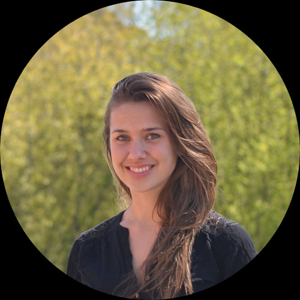

Are you looking for a unique summer job experience?
Do you want to build a project in the field of synthetic biology from scratch together with your peers?
Do you want to combine knowledge from various fields of study to create something incredible?
If the answer is yes – apply to be part of the Aalto-Helsinki iGEM 2020 team!
Besides getting to organize and execute a project of your choice, you will have the opportunity to travel and network with professionals and other synbio enthusiasts during the project.
All of this will culminate at the iGEM Giant Jamboree in Boston in November 2020 where you have a chance to present your project.
We are looking for students from Aalto University and the University of Helsinki with strong motivation, team work skills, and can do -attitude.
We are recruiting Team Members and Team Leader(s) with a background in some of the following: Bioinformatics, Biology, Bioengineering, Biotechnology, Business, Funding, Chemistry, Computer Science, Design, Entrepreneurship, Graphic Design, Math, Medicine, Molecular Biosciences, Marketing, Physics, Research, Software, and Mechanical/ Civil/ Electrical Engineering.
The project will kick start during early spring, and the team will start with ideation of project topics and funding arrangements.
Summer will be full time work. The past the teams have received paychecks for the summer - but it is up to the team to negotiate salaries with collaborators.
During the autumn, the team will wrap up the project and prepare for the Giant Jamboree taking place in Boston in November 2020.
You can also receive 10-15 ECTS for the project depending on your school.
We will process applications during the application period, and invite all potential candidates for interviews after the application period.
The first meeting of the new team will be on Sunday 16.2.2020 - please mark your calendar!
iGEM - International Genetically Engineered Machine is a synthetic biology competition for students all around the world.
With over 300 teams participating yearly, the goal is to design and execute a synthetic biology project that helps finding solutions to real world problems.
The final showcase takes place in Boston, USA, where teams present their projects to participants from over 40 different countries.
Aalto-Helsinki is a student lead team participating in the iGEM competition.
Since 2014, students from Aalto University and the University of Helsinki have joined forces to run a synthetic biology project with an interdisciplinary team from the start to the final showcase.
To read more about the 2019 team’s iGEM journey, visit our blog here: https://blog.aaltohelsinki.com/
VibXPresso
Vibrio natriegens with Xtreme Protein Expression and Secretion System Optimization
Vibrio natriegens is challenging Escherichia coli as the organism of choice for research and biotechnology applications – and we’re betting on V. natriegens! The gram-negative marine bacteria with a generation under 10 minutes combined with the ability to produce and secrete large amounts of proteins into the growth medium makes V. natriegens an ideal chassis organism.
Inspired by the possibilities that V. natriegens offers, our team Aalto-Helsinki is determined to take on the challenge of improving the bacterium’s protein expression and secretion.
Recombinant proteins are widely used for biomedical research and in the pharmaceutical industry. Several methods for protein production have been established during the past decades providing aid for millions of people. However, even with today’s technologies, improved efficacy is urgent as the demand for recombinant proteins is only increasing - it has been estimated that within the next 10 years half of all medicine will be biopharmaceutical, including recombinant proteins.
Our iGEM project aims to tackle these challenges by improving the next-generation synthetic biology chassis organism Vibrio natriegens. Hence the name of our project VibXPresso - Vibrio natriegens with Xtreme PRotein Expression and Secretion Optimization.
To read more about the science behind our project visit our wiki.
TEAM
What if students ran their own research project?
The Aalto-Helsinki 2019 is a multidisciplinary team of 10 people with a shared ambition to conduct a unique synthetic biology research project. With expertise in biosystems and biomaterials engineering, microbiology, bioinformatics, molecular biosciences, energy and environmental engineering, biotechnology and chemical engineering, translational medicine, chemistry, design, and business, our team has the capability to conduct an exceptional research project that requires multidisciplinary skills, ambition, and innovation. Thus, Aalto-Helsinki is an extremely diverse team that truly represents the spirit of Aalto University and University of Helsinki by bringing the various fields of study together for higher value creation.
Our main advisor is Heli Viskari, Aalto University lecturer, Department of Bioproducts and Biosystems, and our advising team also includes Minna Poranen, Principal Investigator at the University of Helsinki, faculty of Biological and Environmental Sciences, and Markus Linder, Aalto University professor of Biomolecular Sciences.
Our aim is to design and prototype a synthetic biology project and participate in the world’s largest synthetic biology competition, iGEM, in November 2019 to showcase our project among other top universities in the world.
Ilse Kaaja
University of Helsinki
Ilse is currently studying in the Translational Medicine MSc program at the University of Helsinki. She is enthusiastic about health innovations. On free time enjoys all things outdoors and coaches track & field.
Amanda Raitosalo
University of Helsinki
Amanda is currently wrapping up her Master’s studies in Microbiology at the University of Helsinki. She has a Bachelor’s degree in the same subject. Currently she's working on a project related to oil spill response, with the help of microbes! Amanda also has some experience in medical microbiology.
Antti Pennanen
University of Helsinki
Antti is studying Molecular Biosciences (BSc) at the University of Helsinki. He applied to the team because iGEM seemed like a great opportunity to gain experience in applying scholarly knowledge in practice, while learning lots of other useful skills.
Antti Toivanen
University of Helsinki
Antti is studying molecular biosciences at University of Helsinki. He has studied some computer science on the side and is planning on focusing on bioinformatics during his master's. Antti is interested in tech, sciences and all things nerdy in general. He enjoys books, movies and occasional videogaming.
Arina Vara
Aalto University
Arina is currently majoring in Energy and Environmental Technology and minoring in Bioinformation Technology at Aalto University. On her free time she loves doing art, such as painting and drawing.
Camilla Selenius
Aalto University
Camilla is finishing her Bachelor’s Degree in Biotechnology and Chemical Technology at Aalto University. In the fall, she will start studying towards her Master’s Degree in Biosystems and Biomaterials Engineering.
Miika Korpioja
Aalto University
Miika has a Bachelor’s Degree in Biotechnology and Chemical Technology and is currently studying a Master’s programme in Biosystems and Biomaterials Engineering at Aalto University. On his free time, Miika can be found at the gym or playing his beloved guitars.
Neja Sirc
University of Helsinki
Neja is currently finishing her Bachelor's degree in Chemistry at University of Helsinki. In the fall, she will start Master’s programme in Translational Medicine. She has some experiences in biomedical research and is looking forward to use those in the project. In her free time she enjoys taking long hikes, preferably in the mountains. She is an active member of 2 student organizations and when she is not trying to figure out a solution to a scientific problem she is a social butterfly.
Noora Haapala
University of Helsinki
Noora Haapala has a Bachelor’s degree in Biomedicine and is currently studying a Master’s programme in Translational Medicine. She has some experience in biomedical research and bioentrepreneurship. She goes bouldering or works out at the gym at times when she is not busy figuring out how to solve all the problems in the world with science.
Tuomas Burakowski
Aalto University
Tuomas studies design at Aalto ARTS. He worked as an art conservator for a number of years before deciding to switch fields. Did some sports way back then. He likes tinkering with stuff such as 3D-printers etc. and he enjoys watching certain sports as well.

Ursula Mikkola
UH & Aalto University
Ursula is studying Entrepreneurship and Innovation Management at Aalto University and minoring in Molecular Biosciences at the University of Helsinki. On her free time, she enjoys doing sports and spending time with her friends.
iGEM
What if synthetic biology was used to engineer a solution to solve grand issues in healthcare?
International Genetically Engineered Machine (iGEM) is an international synthetic biology competition originating from the Massachusetts Institute of Technology, Boston, USA. The iGEM competition challenges students to design and implement a project within a short time frame using innovation, design, experimental work, modelling applications.
The broader purpose of our project is to promote and increase the understanding of synthetic biology in Finland and around the world. Synthetic biology is a field of science and technology that combines biology with engineering principles. The basic principle is to design new genes, genetic devices, metabolic routes and entire organisms to create novel products and production pathways. Standardization is also a key component of this process, which is why one goal of the iGEM competition is to maintain the "BioBrick part registry" - a library of standardized genetic parts.
Synthetic biology has the potential to provide valuable solutions to many of today's problems. However, media and the general public still sometimes see genetically modified organisms rather as a threat than an opportunity. We work responsibly and take safety and ethics carefully into account in our project design and laboratory work. We conduct research that is safe for us and the environment.
SUPPORT US
We are an independent, student driven team of passionate students, who have a strong will to create new synthetic biology solutions. However, we could not do this without the support of our partners.
If you or your organization would like to support us in some way, contact us at team (at) aaltohelsinki.com. All of our supporters will be mentioned on this page and in our presentations and posters. Additional benefits, such as social media visibility can be negotiated.
CONTACT
We are a student-driven team that will participate in a synthetic biology competition: International Genetically Engineered Machine (iGEM).
We believe that science has great potential, when practiced responsibly and safely. We are happy to comment on our project, synthetic biology, the competition or science in general. Because of this, we also intend to organize workshops and present at events, as well as create educational online material about synthetic biology, in Finnish.
If you would like to interview us or write about us in the media, feel free to contact us through our team email team@aaltohelsinki.com. We are more than happy to help.
Warm thanks to all who have contributed to our iGEM journey! This project would not be possible without them.